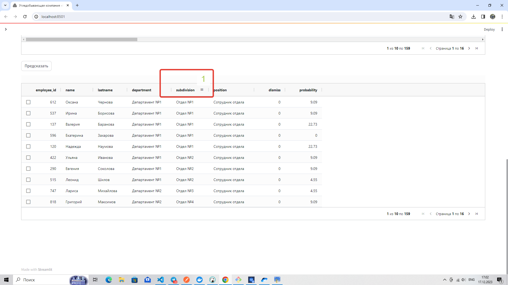
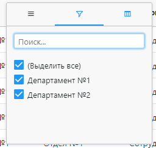
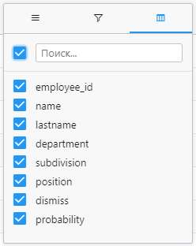
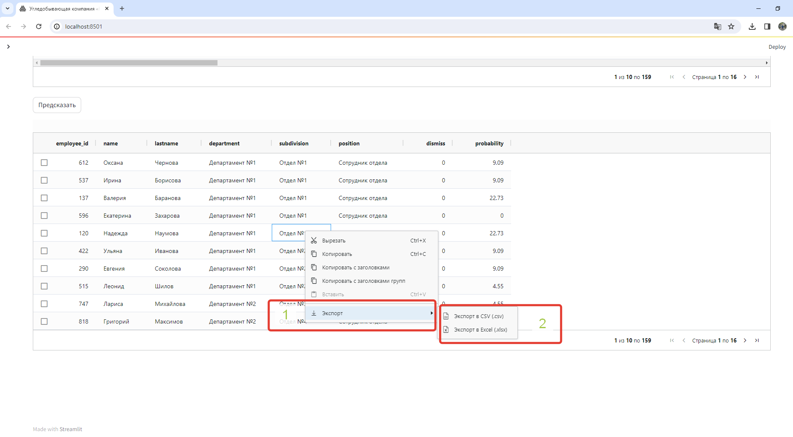
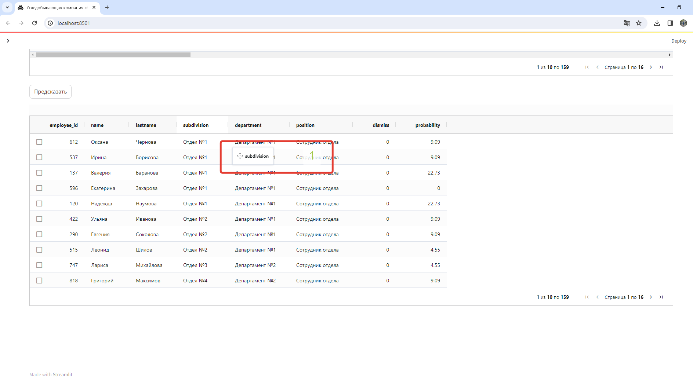
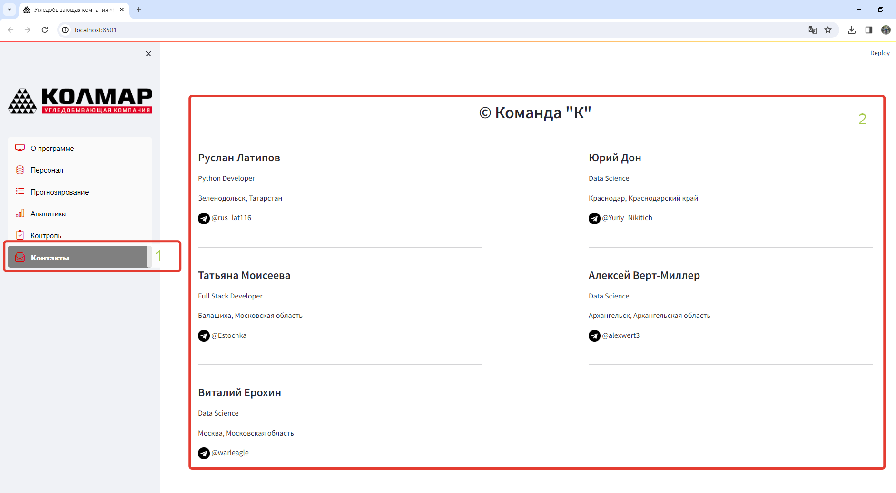

СОПРОВОДИТЕЛЬНАЯ ДОКУМЕНТАЦИЯ
Сервис предсказания вероятности увольнения сотрудников.
1. Краткое описание сервиса:
Сервис предоставляет возможность оценить динамику событий работы с сообщениями электронной почты и умеет:
- давать прогнозную оценку в % вероятности скорого увольнения каждого сотрудника.
- давать аналитику в разрезе отделов и департаментов по вероятности увольнения сотрудников
- с помощью подключенного телеграмм бота добавлять и удалять ответственных за текучесть сотрудников, рассылать файлы, списки сотрудников, отображать топ 3 с самым высокой вероятностью увольнения.
- осуществлять контроль за сотрудниками с высокой вероятностью увольнения с использованием чек листа и сравнительной статистикой.
2. Основные идеи работы сервиса:
Данные для обучения получаем за последний год, до даты начала предсказания. Интервал времени - 1 день.
Предсказание вероятности увольнения сотрудников производится моделью на данных с временным сдвигом 1 неделя, т.е. агрегированные данные за временной период 12 месяцев, но со сдвигом вперед на 1 неделю.
Переобучение модели на новых данных в соответствии с интервалом сдвига.
Визуализация результатов предсказания и аналитической информации
Уведомление ответственных лиц (email, telegram)
Чек лист ответственных сотрудников по работе с важными сотрудниками с высокой вероятностью увольнения.
Контроль изменения вероятности увольнения важных сотрудников в следующем интервале предсказания.
3. Пайплайн:
Получение данных из баз данных:
Данные из почтового сервиса
Данные из CRM системы
Предобработка данных
EDA
Генерация новых фичей и отбор лучших фичей
Подбор лучшей модели:
- выбор метрики,
- подбор гипперпараметров
- выбор лучшей метрики по средней кроссвалидации
Интерпретация результатов предсказания лучшей модели, важность признаков при работе модели.
Предсказание вероятности увольнения сотрудников, все сотрудники с вероятностью более 50 % в зоне риска увольнения
Далее происходит работа ответственных сотрудников в соответствии с чек листом:
- Выявления возможных причин увольнения сотрудников
- Выявление неудовлетворенности работой.
- Выявление других возможных проблем влияющие на принятие решений по увольнению
- Принятие решений по выявленным проблемам сотрудника
Через неделю/ 2 недели/ 3 недели контрольный замер эффективности, путем сравнения результатов предсказания вероятности увольнения сотрудников посредством переобучения модели на данных с временным сдвигом в соответствии с определенными интервалами.
4. Описание получения данных по переписке в почтовых сервисах компании:
Данные получаем из нескольких баз данных:
База данных хранения статистики использования почтового сервиса
База данных хранения писем из почтовой переписки сотрудников.
База данных хранения HR статистики о персонале.
Логика выгрузки и агрегирования данных:
Основная таблица для конкатенации была таблица из HR которая содержала в себе информацию:
ФИО сотрудника
ID сотрудника
Пол
Возраст
Дата приема на работу
Дата увольнения
Из данной таблицы получили следующие признаки:
name - ФИО сотрудника
employee_id - ID сотрудника
male - Пол
age - Возраст
experience - из крайней даты отчетного периода или даты увольнения отняли Дата приему на работу
target - вычислили по Дата увольнения
Данные по численности выбирались за 12 месяцев, где учитывались все сотрудники, со стажем работы более 1 месяца (т.к. сотрудники менее одного месяца по объективным причинам имели сильно отклоняющимися данными по количественным характеристикам почтовой переписки).
Данные из базы хранения писем выгружались за 12 месяцев, данные представляли собой:
ID сотрудника к которому прикреплен почтовый адрес
Почтовый адрес
Текст входящего письма
Статус ответа на входящее сообщение
Текст исходящего письма
Статус письма с внешними адресами (при наличии хоть 1 адресата с внешним адресом в адресе)
Статус письма с внутренними адресами (только внутреннии адресаты)
Дата и время письма
Дата и время прочтения входящего письма
Адресаты в отправленных письмах
Адресаты в копии
Адресаты в скрытой копии
Вес письма в байтах.
Из данных таблиц получили следующие признаки:
answer_total - фильтровали письма по полю Статус ответа на входящее сообщение, далее группировали в разрезе ID сотрудника по строкам и группировали столбцы суммируя количество таких писем по месяца, Брали сумму значения за период.
answer_last - фильтровали письма по полю Статус ответа на входящее сообщение, далее группировали в разрезе ID сотрудника по строкам и группировали столбцы суммируя количество таких писем по месяца, брали число последнего месяца периода, если сотрудник работал 12 и более месяцев в отчетном периоде, либо последний месяц перед месяцем увольнения.
cnt_question_incoming - фильтровались входящие письма с вопросительными знаками для расчета показателя и со статусом без ответа, и группировали в разрезе ID сотрудника по строкам и группировали столбцы суммируя количество таких писем по месяца за период.
cnt_text_mean_total - рассчитывалось количество символов для исходящих сообщений, группировались данные по среднему значению в разрезе ID сотрудника по строкам и месяцам по столбцам, далее брали среднее значение за период.
cnt_text_mean_last - рассчитывалось количество символов для исходящих сообщений, группировались данные по среднему значению в разрезе ID сотрудника по строкам и месяцам по столбцам, далее брали значение последнего месяца периода, если сотрудник работал 12 и более месяцев в отчетном периоде либо последний месяц перед месяцем увольнения.
out_work_email_total - фильтровали письма отправленные вне рабочего времени, по полю Дата и время письма (брали время) и сравнивали со временем окончания рабочего дня. Группировали суммируя количество таких писем в разрезе ID сотрудника по строкам и группировали столбцы по месяцам. Брали сумму за период
out_work_email_last - фильтровали письма отправленные вне рабочего времени, по полю Дата и время письма (брали время) и сравнивали со временем окончания рабочего дня. Группировали суммируя количество таких писем в разрезе ID сотрудника по строкам и группировали столбцы по месяцам. Брали число последнего месяца периода, если сотрудник работал 12 и более месяцев в отчетном периоде либо последний месяц перед месяцем увольнения.
out_work_internal_email_total - фильтровали письма отправленные вне рабочего времени, по полю Дата и время письма (брали время) и сравнивали со временем окончания рабочего дня, а так же ставили фильтр по полю Статус письма с внутренними адресами, отбирая только внутреннюю переписку. Группировали суммируя количество таких писем в разрезе ID сотрудника по строкам и группировали столбцы по месяцам. Брали сумму за период
out_work_internal_email_last - фильтровали письма отправленные вне рабочего времени, по полю Дата и время письма (брали время) и сравнивали со временем окончания рабочего дня, а так же ставили фильтр по полю Статус письма с внутренними адресами, отбирая только внутреннюю переписку. Группировали суммируя количество таких писем в разрезе ID сотрудника по строкам и группировали столбцы по месяцам. Брали число последнего месяца периода, если сотрудник работал 12 и более месяцев в отчетном периоде либо последний месяц перед месяцем увольнения.
out_work_external_email_total - фильтровали письма отправленные вне рабочего времени, по полю Дата и время письма (брали время) и сравнивали со временем окончания рабочего дня, а так же ставили фильтр по полю Статус письма с внешними адресами, отбирая только внешнюю переписку. Брали сумму писем за период.
out_work_external_email_last - фильтровали письма отправленные вне рабочего времени, по полю Дата и время письма (брали время) и сравнивали со временем окончания рабочего дня, а так же ставили фильтр по полю Статус письма с внешними адресами, отбирая только внешнюю переписку. Брали число последнего месяца периода, если сотрудник работал 12 и более месяцев в отчетном периоде либо последний месяц перед месяцем увольнения.
external_email_total - фильтровали письма отправленные во вне выбирая по полю Статус письма с внешними адресами, группировали в разрезе ID сотрудника по строкам и группировали столбцы по месяцам. Брали сумму писем за период.
external_email_last - фильтровали письма отправленные во вне выбирая по полю Статус письма с внешними адресами, группировали в разрезе ID сотрудника по строкам и группировали столбцы по месяцам. Брали число последнего месяца периода, если сотрудник работал 12 и более месяцев в отчетном периоде либо последний месяц перед месяцем увольнения.
internal_email_total - фильтровали письма отправленные внутри компании выбирая по полю Статус письма с внутренними адресами, отбирая только внутреннюю переписку. Группировали суммируя количество таких писем в разрезе ID сотрудника по строкам и группировали столбцы по месяцам. Брали сумму писем за период.
internall_email_last - фильтровали письма отправленные внутри компании выбирая по полю Статус письма с внутренними адресами, отбирая только внутреннюю переписку. Группировали суммируя количество таких писем в разрезе ID сотрудника по строкам и группировали столбцы по месяцам. Брали число последнего месяца периода, если сотрудник работал 12 и более месяцев в отчетном периоде либо последний месяц перед месяцем увольнения.
cnt_addressees - по полю адресаты агрегировали и получали среднее количество адресатов за месяц, далее группировали значения по ID сотрудника по строкам и группировали столбцы по месяцам получая среднее количество адресатов в месяц за период.
cnt_address_copy_total - по полю адресаты в копии группировали ID сотрудника по строкам и группировали столбцы по месяцам получая среднее количество адресатов в месяц за период. Брали среднее количество за период.
cnt_address_copy_last - по полю адресаты в копии группировали ID сотрудника по строкам и группировали столбцы по месяцам получая среднее количество адресатов в месяц за период. Брали число последнего месяца периода, если сотрудник работал 12 и более месяцев в отчетном периоде либо последний месяц перед месяцем увольнения.
cnt_address_hidden_copy_total - по полю адресаты в скрытой копии группировали ID сотрудника по строкам и группировали столбцы по месяцам получая среднее количество адресатов в месяц за период. Брали среднее количество за период.
cnt_address_hidden_copy_last - по полю адресаты в скрытой копии группировали ID сотрудника по строкам и группировали столбцы по месяцам получая среднее количество адресатов в месяц за период. Брали число последнего месяца периода, если сотрудник работал 12 и более месяцев в отчетном периоде либо последний месяц перед месяцем увольнения.
div_bytes_emails - по полю Вес письма в байтах получали средний показатель входящих и исходящих писем и вычисляли разницу
cnt_days_pause_total - по полям дата и время письма и дата и время прочтения письма рассчитывались показатели количества дней между получением и прочтением, группировали ID сотрудника по строкам и группировали столбцы по месяцам суммируя количество дней в месяц за период. Брали сумму дней за период.
cnt_days_pause_last - по полям дата и время письма и дата и время прочтения письма рассчитывались показатели количества дней между получением и прочтением, группировали ID сотрудника по строкам и группировали столбцы по месяцам суммируя количество дней в месяц за период. Брали число последнего месяца периода, если сотрудник работал 12 и более месяцев в отчетном периоде либо последний месяц перед месяцем увольнения.
cnt_4hours_later_total - по полям дата и время письма и дата и время прочтения письма рассчитывались показатели количества часов между получением и прочтением, группировали ID сотрудника по строкам и группировали столбцы по месяцам суммируя количество писем значение которых превышает 4 часа. Брали сумму таких писем за период
cnt_4hours_later_last - по полям дата и время письма и дата и время прочтения письма рассчитывались показатели количества часов между получением и прочтением, группировали ID сотрудника по строкам и группировали столбцы по месяцам суммируя количество писем значение которых превышает 4 часа. Брали число последнего месяца периода, если сотрудник работал 12 и более месяцев в отчетном периоде либо последний месяц перед месяцем увольнения.
Из базы данных хранения информации по использованию почтового сервиса мы также выгружали данные за 12 месяцев заданного периода, в разрезе месяца, для получения агрегированных показателей за выбранный период и последний месяц отчетного периода/последний месяц перед увольнением:
ID сотрудника
Количество использования почтового сервиса
Количество входящих писем
Количество исходящих писем
Из данных таблиц получили следующие признаки:
received_total - из поля Количество входящих писем вычисли сумму полученных писем за период
received_last - из поля Количество входящих писем взяли цифру последнего месяца периода, если сотрудник работал 12 и более месяцев в отчетном периоде либо последний месяц перед месяцем увольнения.
total_letters_total - из поля Количество исходящих писем вычисли сумму полученных писем за период
total_letters_last - из поля Количество исходящих писем взяли цифру последнего месяца периода, если сотрудник работал 12 и более месяцев в отчетном периоде либо последний месяц перед месяцем увольнения.
active_use_email - считали количество месяцев в которых использовался почтовый сервис для каждого сотрудника
use_email_total - суммировали данные по полю Количество использования почтового сервиса
use_email_last - по полю Количество использования почтового сервиса
брали цифру последнего месяца периода, если сотрудник работал 12 и более месяцев в отчетном периоде либо последний месяц перед месяцем увольнения.
5. Структура данных таблиц СУБД
База данных реализована в PostgreSQL
(параметры доступа)
- host: 89.232.167.79
- port: 5432
- user: root
- password: Rtunb892
- database: postgres
PostgreSQL — это объектно-реляционная система управления базами данных (ORDBMS), наиболее развитая из открытых СУБД в мире. Имеет открытый исходный код и является альтернативой коммерческим базам данных.
nosqldbm.xml - описания модели данных, сервис для просмотра в интерактивном режиме

| Таблицы | Наименование таблиц |
|---|---|
| admins | админ |
| users | сотрудники |
| departments | департаменты |
| subdivisions | отделы |
| roles | роли |
| positions | должности |
| emails | письма |
| predicts | предсказания |
| ratings | рейтинг |
| user_bots | служебная таблица для бота |
| department_bots | служебная таблица для бота |
| subdivision_bots | служебная таблица для бота |
6. Модуль оповещений и рассылки отчетов (Telegram bot)
6.1 Команды, доступные только для HR чата
/рассылка
отправляет в чат и почту HR, а также ответственным руководителям файл .csv с отчётом - вероятность увольнения по каждому сотруднику, находящемуся в подчинении. HR получает отчет по всем сотрудникам.
Примечание: на текущий момент все отчеты отправляются на технический email. При этом данные email берутся из таблицы департаментов и отделов, соответсвующие адреса отображаются в заголовке письма ( kolmar.hr@yandex.ru )
/отслеживать <id>
добавляет к отслеживанию сотрудника с ID = <id> - отображается на дашборде.
/неотслеживать <id>
убирает из отслеживания
/инфо
показывает краткую информацию о сотруднике с ID = <id>
6.2 Команды для всех чатов
Правила доступа:
* Чат отдела имеет доступ к данным только своего отдела
* Чат депортамента имеет доступ к данным всех отделов, входящих в состав департамента
/отчет
/отчет <название отдела или департамента>
Если указано название отдела/департамента, бот отправит файл с данными по сотрудникам отдела/департамента с указанием шанса уволиться, если нет, отправит файл со всеми данными, к которым есть доступ
/топ3
/топ3 <название отдела или департамента>
Если указано название отдела/департамента, бот отправит файл с данными по ТОП-3 сотрудникам отдела/департамента с максимальным шансом уволиться, если нет, отправит файл со всеми данными ТОП-3 сотрудников с максимальным шансом уволиться, к которым есть доступ
/список
/список <название отдела или департамента>
Если указано название отдела/департамента, бот отправит список с данными по сотрудникам отдела/департамента, если нет, отправит сообщение со всеми данными, к которым есть доступ
Комментарии:
Данные в информационных отчетах и файлах демонстарционные, при необходимости можно доработать и выводить любые необходимые поля, которые есть в БД
6.3 Технические команды:
/номерчата
отображает номер текущего чата, чтоб можно было ему дать доступ
/команды
список команд
6.4 В реализации:
Для HR чата сделать команду, которая будет давать права доступа для других чатов
На текущий момент все доступы "захардкожены"”", далее все доступы могут быть доступны на основе данных из БД
7. Описание структуры входных и выходных данных
7.1 Входные данные
Файл в формате CSV разделитель ,
Обазец файла - для загрузки в модель
Примечание
сотрудник предварительно должен быть занесен в CRM системы кадровой службы, в случае отсутствия предсказание для всего файла не будет сделано, сервис выдаст ошибку
| Наименование признака | Значение признака | Тип данных |
|---|---|---|
| employee_id | id сотрудника | int64 |
| male | пол | int64 |
| age | возраст | int64 |
| experience | опыт в днях | int64 |
| use_email_total | вход в почту итого за анализируемый период | int64 |
| active_use_email | количество активных дней использования почты за анализируемый период | int64 |
| use_email_last | вход в почту итого за последний месяц перед предсказанием | int64 |
| out_work_internal_email_total | отправка писем итого внутри компании вне рабочего времени | int64 |
| out_work_internal_email_last | отправка писем последний месяц внутри компании вне рабочего времени | int64 |
| out_work_external_email_total | отправка писем итого внешним компаниям вне рабочего времени | int64 |
| out_work_external_email_last | отправка писем последний месяц внешним компаниям вне рабочего времени | int64 |
| cnt_days_pause_total | итого количество дней между получением письма и его прочтением | int64 |
| cnt_days_pause_last | количество дней между получением письма и его прочтением в послений месяц | int64 |
| cnt_4hours_later_total | количество писем итого прочитанных более чем через 4 часа | int64 |
| cnt_4hours_later_last | количество писем в последний месяц прочитанных более чем через 4 часа | int64 |
| total_letters_total | итого отправленных писем | int64 |
| total_letters_last | количество писем отправленных в последний месяц | int64 |
| received_total | итого полученных сообщений | int64 |
| received_last | полученные сообщения в последний месяц | int64 |
| answer_total | итого сообщенний на который направлен ответ | int64 |
| answer_last | сообщенния за последний месяц на который направлен ответ | int64 |
| out_work_email_total | отправка писем итого вне рабочего времени | int64 |
| out_work_email_last | отправка писем последний месяц вне рабочего времени | int64 |
| external_email_total | отправка писем итого внешним компаниям | int64 |
| external_email_last | отправка писем последний месяц внутри компании | int64 |
| internal_email_total | отправка писем итого внутри компании | int64 |
| internall_email_last | отправка писем последний месяц внутри компании | int64 |
| cnt_addressees | количество адресатов в отправляемых сообщениях; | int64 |
| cnt_address_copy_total | количество сообщений с адресатами в поле "копия", всего за период | int64 |
| cnt_address_copy_last | количество сообщений с адресатами в поле "копия", в последний месяц | int64 |
| cnt_address_hidden_copy_total | количество сообщений с адресатами в поле «скрытая копия» итого за период | int64 |
| cnt_address_hidden_copy_last | количество сообщений с адресатами в поле «скрытая копия» в последний месяц | int64 |
| div_bytes_emails | отношение объема в байтах получаемых и отправляемых сообщений | float64 |
| cnt_question_incoming | количество входящих сообщений, имеющих вопросительные знаки в тексте, но на которые не был направлен ответ. | int64 |
| cnt_text_mean_total | среднее количество символов в отправлемых письмах за аналищируемый период | float64 |
| cnt_text_mean_last | среднее количество символов в отправлемых письмах в последний месяц | float64 |
7.2 Выходные данные
| Наименование признака | Значение признака | Тип данных |
|---|---|---|
| employee_id | id сотрудника | int64 |
| name | имя | object |
| lastname | фамилия | object |
| department | департамент | object |
| subdivision | отдел | object |
| position | должность | object |
| dismiss | метка класса (1 - уволить, 0 - не уволить ) | int64 |
| probability | вероятность увольнения | float64 |
Доступна выгрузка выходных данных в файл
- в формате CSV разделитель ,
- в формате XLSX MS Office
8. WEB - сервис
Web сервис сотрудника кадровой службы взаимодействует с базой данной (см. раздел 5) посредствам API (см. раздел 9)
Web сервис - ссылка на сервис
8.1 Домашняя страница
- 1 - меню
- 2 - рабочая област
Примечание
меню возможно скрыть при нажатии на Х, обратное отображение меню при нажатии на >

8.2 Персонал
- 1 - переход на страницу "Персонал"
- 2 - имитация CRM системы кадровой службы
Примечание
доступны справочники департаментов, отделов, персонала (должности, роли, сотрудники, структура штата)

Типовая вкладка справочника
- 1 - переход на страницу "Персонал"
- 2 - выбор справочника "Департаменты"
Примечание
форма ввода данных, возможно добавление/удаление данных (на время хакатона не доступно во избежание утраты данных из базы данных) - 3 - вывод данных

8.3 Прогнозирование
- 1 - переход на страницу "Прогнозирование"
- 2 - включение/отключение демонстрационного режима
Примечание
при демонстрационном режиме возможно задать пользовательскую текущею дату - 3 - выбор текущей даты
Примечание
при отключении демонстрационного режима автоматический определяется текущая дата - 4 - загрузка данных (см. раздел 7.1)
Примечание
необходимо перетащить файл в окно загрузки или кликнуть левой клавишей мыши окно загрузки/или нажать кнопку Browse files и задать пользовательский путь к файлу - 5 - после выбора файла нажать кнопку "Загрузить"

После нажатия на кнопку "Загрузить"
- 1 - уведомление об успешной загрузке
- 2 - отображение наименования загруженного файла
- 3 - предпросмотр загруженного файла
Примечаие
- доступно перелистывание страниц/переход на начальную или последнею страницу (навигатор в правом нижнем углу таблицы)
- в навигаторе указано общее количество строк записей в файле
- данные выводядся по 10 строк - 4 - для получения результатов предсказания моделью нажать кнопку "Предсказать"

- 1 - результат предсказания (см. раздел 7.2)

Примечание
- результат предсказания автоматический сохраняется в базу данных
- данные предсказываемого файла также автоматический сохраняются в базу данных
Основные возможности работы с результатом предсказания
- 1 - при клике левой кнопкой мыши по левой/правой стороне каждого столбца, в зависимости от его расположения относительно срединного столбца доступно меню по работе и анализу данных (три полоски)

- 1 - основная рабочая область
- 2 - фильтрация данных
- 3 - выбор отображаемых столбцов
- 4 - группировка по выбранному столбцу

- 2 - фильтрация данных
Примечание
для фильтраии данных необходимо ввести требуюмую информацию в строку поиска (фильтрация данных и логика работы зависит от типа данных) или прокликать мышью по галочкам, далее нажать Enter на клавиатуре

- 3 - выбор отображаемых столбцов
для отображения столбцов необходимо ввести требуюмую информацию в строку поиска или прокликать мышью по галочкам, далее нажать Enter на клавиатуре

Возможность выгрузки данных в файл CSV или XLSX MS Office
Для выгрузки данных в файл необходимо кликнуть правой клавишей мыши по любому месту рабочей области таблицы
- 1 - выбрать "Экспорт"
- 2 - выбрать желаемый вариант файла
Примечание
состояние файла при выгрузке запоминается в зависимости от фильтрации или группировки данных

Смена очередности отображения столбцов
Для этого необходимо зажать требуемый столбец левой кнопкой мыши и перенести в требуемое место
- 1 - перемещение столбца

Возможный вариант группировки данных
- 1 - группировка данных
Примечание
состояние файла при выгрузке запоминается в зависимости от фильтрации или группировки данных - 2 - сортировка данных по возрастанию/убыванию
Примечание
для сортировки данных необходимо кликнуть по заглавию сортируемого столбца

8.4. Аналитика
- 1 - переход на страницу "Аналитика"
- 2 - вкладки анализа
- 3 - дашборд
Примечание
Расширенная инструкция по порядку работы в дашборде

8.5. Контроль
- 1 - переход на страницу "Контроль"
- 2 - рабочая область (анкета)
Примечание
в стадии разработке

8.6. Контакты
- 1 - переход на страницу "Контакты"
- 2 - контакты команды

9 API
API - документация на API
Примечание
все методы доступны только авторизованному пользователю логин - user, пароль - user, метод - /user.login